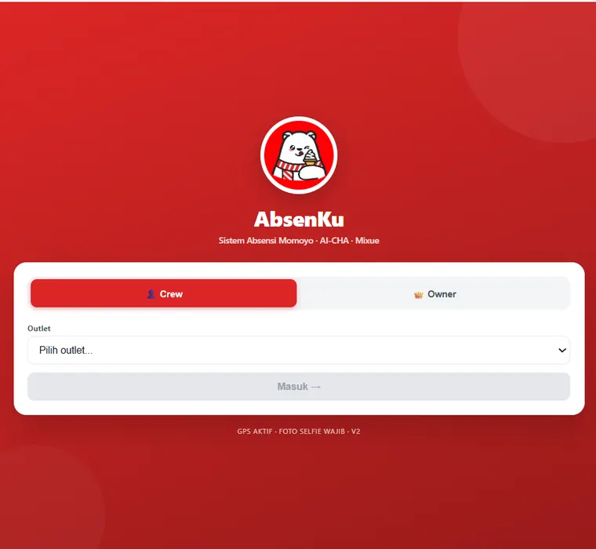
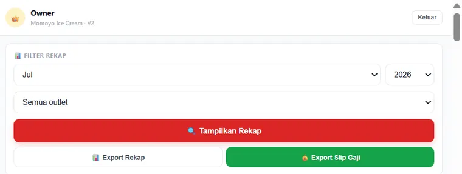
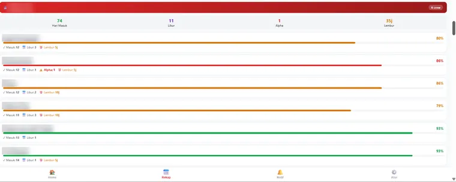
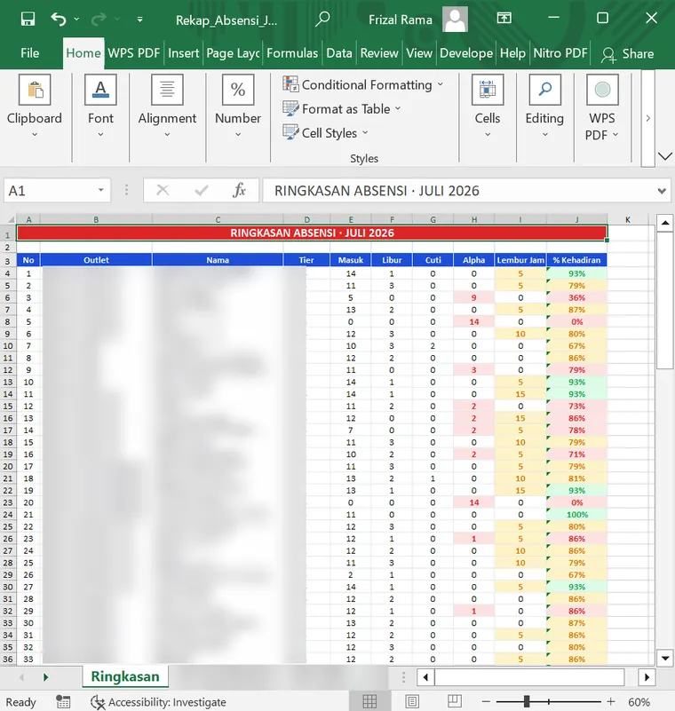
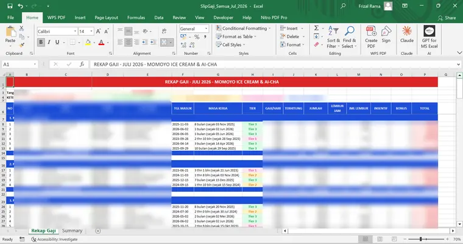

PROYEK 01
AbsenKu
Absensi online dengan verifikasi GPS + selfie wajib. Dua mode: Crew & Owner. Rekap per outlet, gaji otomatis berbasis tier & lembur, serta export rekap dan slip gaji sekali klik.
150+ karyawan
GPS + selfie wajib
1-klik slip gaji





Sebagian data disamarkan demi privasi.